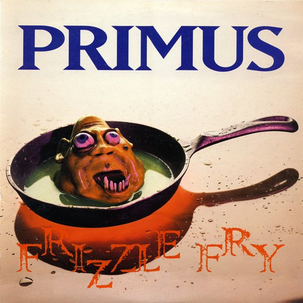
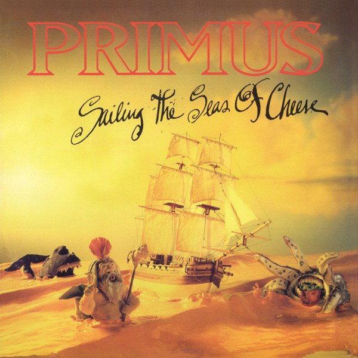
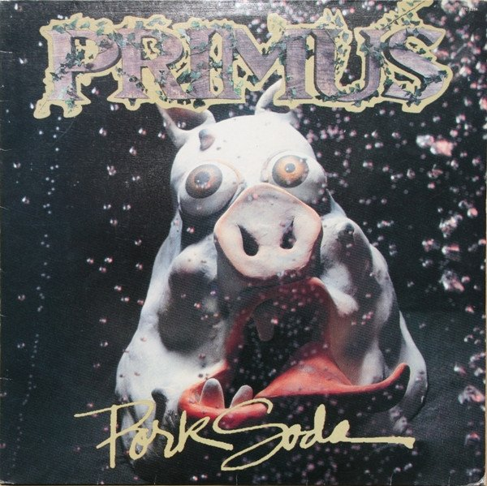
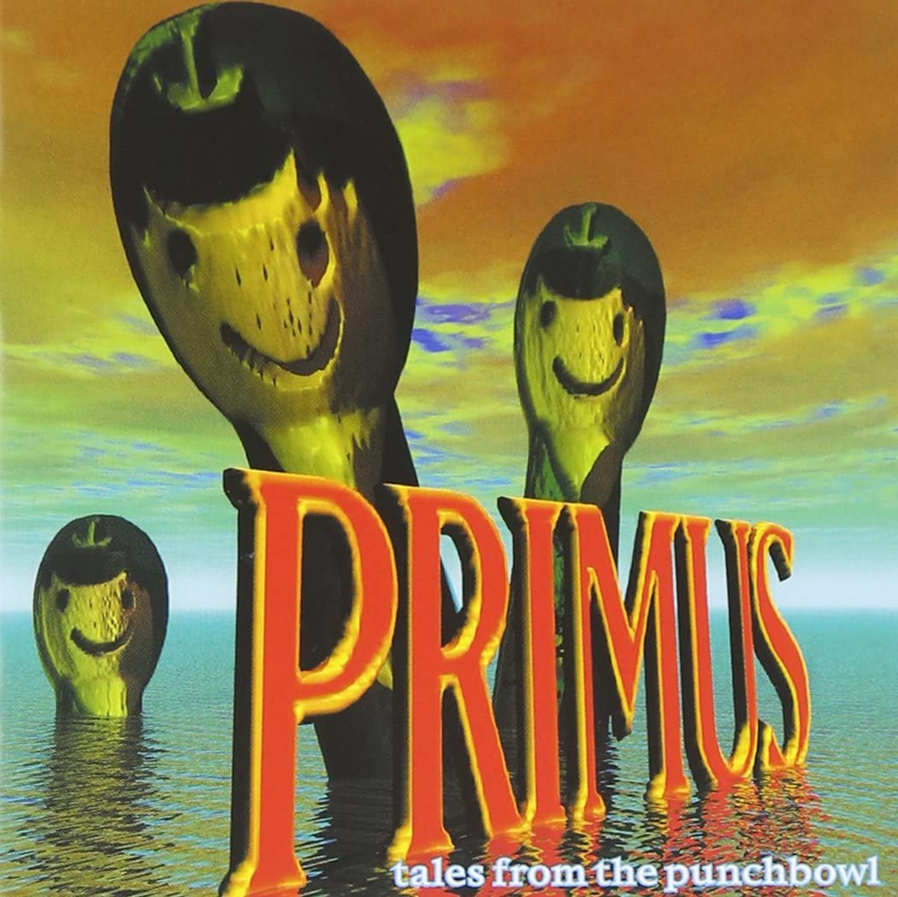
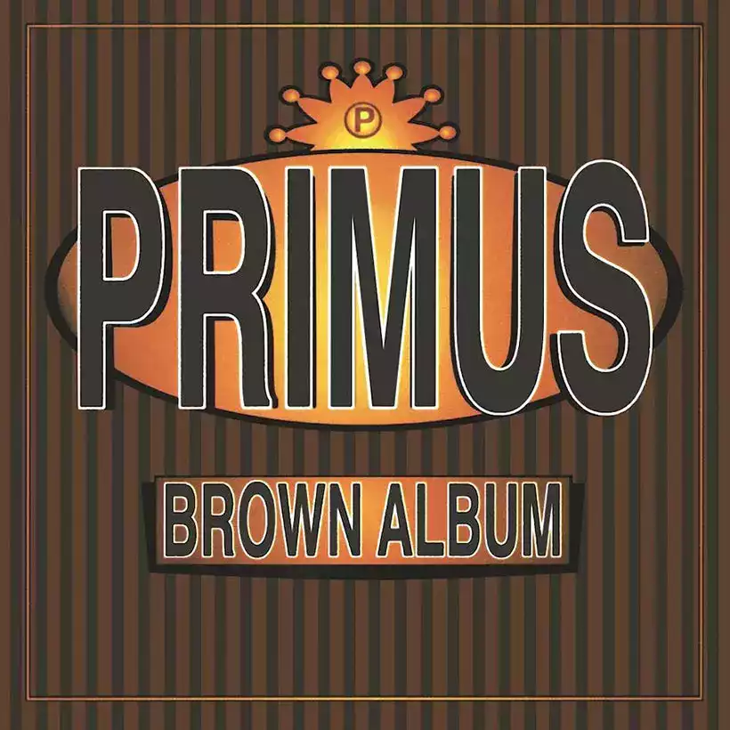
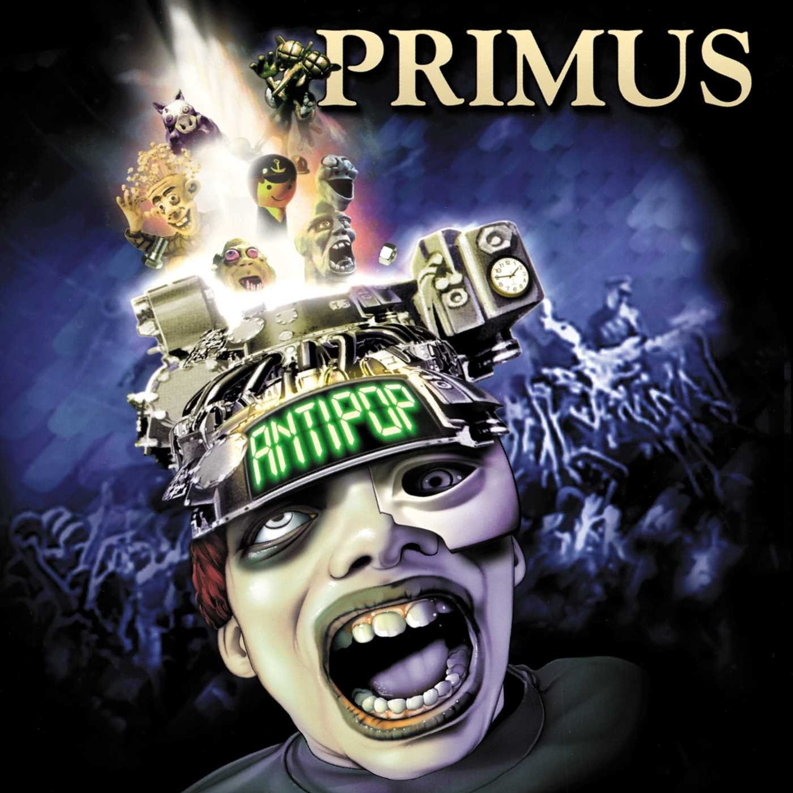
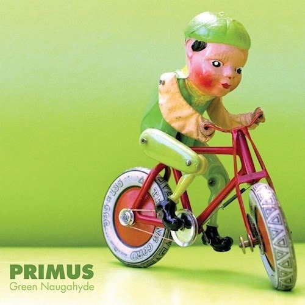
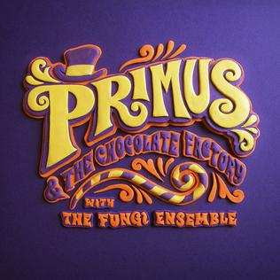
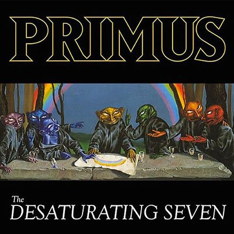

Frizzle Fry (1990)
Tracklist:
- 1.To Defy the Laws of Tradition
- 2.Groundhog's Day
- 3.Too Many Puppies
- 4.Mr. Knowitall
- 5.Frizzle Fry
- 6.John the Fisherman
- 7.You Can't Kill Michael Malloy
- 8.The Toys Go Winding Down
- 9.Pudding Time
- 10.Sathington Willoughby
- 11.Spegetti Western
- 12.Harold of the Rocks
- 13.To Defy

Sailing the Seas of Cheese (1991)
Tracklist:
- 1.Seas of Cheese
- 2.Here Come the Bastards
- 3.Sgt. Baker
- 4.American Life
- 5.Jerry was a Racer Car Driver
- 6.Eleven
- 7.Is it Luck?
- 8.Grandad's Little Ditty
- 9.Tommy the Cat
- 10.Sathington Waltz
- 11.Those Damned Blue-Collar Tweekers
- 12.Fish On (Fisherman Chronicles, Chapter II)
- 13.Los Bastardos

Pork Soda (1993)
Tracklist:
- 1.Pork Chop's Little Ditty
- 2.My Name is Mud
- 3.Welcome to This World
- 4.Bob
- 5.DMV
- 6.The Ol' Diamondback Sturgeon
- 7.Nature Boy
- 8.Wounded Knee
- 9.Pork Soda
- 10.The Pressman
- 11.Mr. Krinkle
- 12.The Air Is Getting Slippery
- 13.Hamburger Train
- 14.Pork Chop's Little Ditty
- 15.Hail Santa

Tales from the Punchbowl (1995)
Tracklist:
- 1.Professor Nutbutter's House of Treats
- 2.Mrs. Blaileen
- 3.Wynona's Big Brown Beaver
- 4.Southbound Pachyderm
- 5.Space Farm
- 6.Year of the Parrot
- 7.Hellbound 17½ (Theme From)
- 8.Glass Sandwich
- 9.Del Davis Tree Farm
- 10.De Anza Jig
- 11.On the Tweek Again
- 12.Over the Electric Grapevine
- 13.Captain Shiner

Brown Album (1997)
Tracklist:
- 1.The Return of Sathington Willoughby
- 2.Fisticuffs
- 3.Golden Boy
- 4.Over the Falls
- 5.Shake Hands with Beef
- 6.Camelback Cinema
- 7.Hats Off
- 8.Puddin' Taine
- 9.Bob's Party Time Lounge
- 10.Duchess and the Proverbial Mind Spread
- 11.Restin' Bones
- 12.Coddingtown
- 13.Kalamazoo
- 14.The Chastising of Renegade
- 15.Arnie

Antipop (1999)
Tracklist:
- 1.Intro
- 2.Electric Uncle Sam
- 3.Natural Joe
- 4.Lacquer Head
- 5.The Antipop
- 6.Eclectic Electric
- 7.Greet the Sacred Cow
- 8.Mama Didn't Raise No Fool
- 9.Dirty Drowning Man
- 10.Ballad of Bodacious
- 11.Power Mad
- 12.The Final Voyage of the Liquid Sky
- 13.Coattails of a Dead Man

Green Naugahyde (2011)
Tracklist:
- 1.Prelude to a Crawl
- 2.Hennepin Crawler
- 3.Last Salmon Man
- 4.Eternal Consumption Engine
- 5.Tragedy's a' comin'
- 6.Eyes of the Squirrel
- 7.Jilly's on Smack
- 8.Lee Van Cleef
- 9.Moron TV
- 10.Green Ranger
- 11.HOINFODAMAN
- 12.Extinction Burst
- 13.Salmon Men

Primus & the Chocolate Factory with the Fungi Ensemble (2014)
Tracklist:
- 1.Hello Wonkites
- 2.The Candy Man
- 3.Cheer Up Charlie
- 4.Golden Ticket
- 5.Lermaninoff
- 6.Pure Imagination
- 7.Oompa Augustus
- 8.Semi-Wondrous Boat Ride
- 9.Oompa Violet
- 10.I Want It Now
- 11.Oompa Veruca
- 12.Wonkmobile
- 13.Oompa TV
- 14.Farewell Wonkites

The Desaturating Seven (2017)
Tracklist:
- 1.The Valley
- 2.The Seven
- 3.The Trek
- 4.The Scheme
- 5.The Dream
- 6.The Storm
- 7.The Ends?